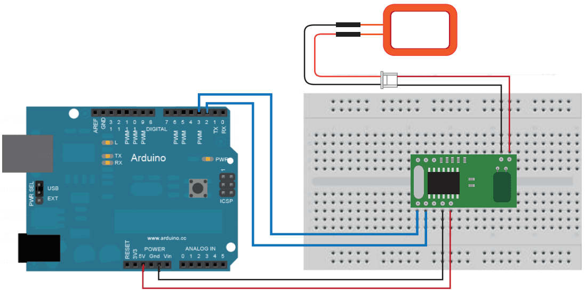

125KHz RFID Reader can read data from RFID tag. It's can use for some IoT or Intelligent Control System.
This demo will show you how to Read data from RFID tag, and control a LED.
Hardware Required：
Circuit：
RFID Reader connect to D2, D3.

Code:
RFID Reader module has internal control IC which make it easy to control. When there's a RFID tag close to the Reader, then it'll output the ID of the tag via UART.
You can do some processing in the code for different ID.
The folowing code didn't judge the ID, whatever tag close to Reader, it can change the state of the led.
Open Arduino IDE, click File -> Sketchbook -> RFID Reader.
Reference: